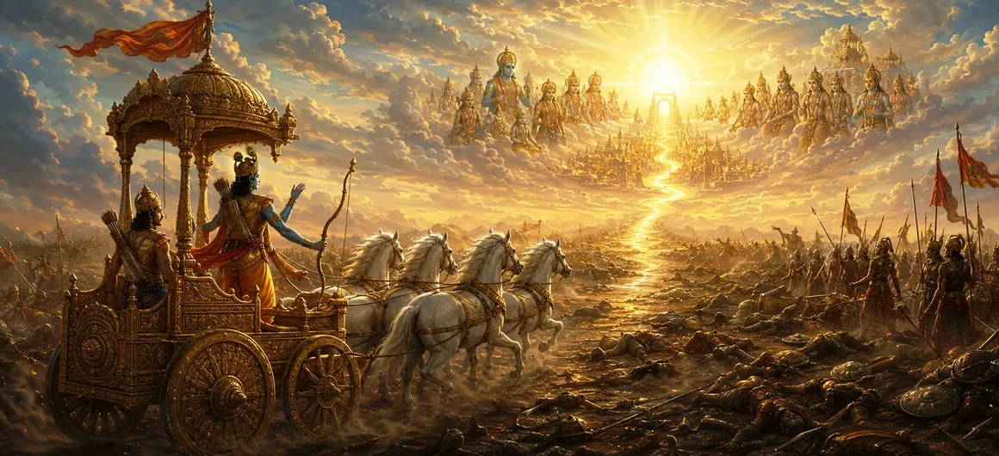

धर्मी युद्ध का फल
उमा संहिता के अध्याय 20, अध्याय 21 में खोजे गए पवित्र ध्वनि और मंत्र ध्यान के आंतरिक विज्ञान से परिवर्तन अपने परिप्रेक्ष्य को सक्रिय शारीरिक और नैतिक जुड़ाव में बदल देता है। धर्मी युद्ध का फल. इस बात की जांच करने के बाद कि आंतरिक आध्यात्मिक ध्यान आत्मा को कैसे शुद्ध करता है, शास्त्र अब बताता है कि जब ब्रह्मांडीय और सामाजिक व्यवस्था को खतरा होता है तो उन पवित्र सिद्धांतों को बाहरी रूप से कैसे प्रकट किया जाना चाहिए - एक विस्तृत ग्यारह गुना ढांचे के माध्यम से प्रदर्शित करना कि कैसे धार्मिक युद्ध (धर्म युद्ध) और कर्तव्य का वफादार निर्वहन सर्वोच्च आध्यात्मिक उन्नति की ओर ले जाता है।
इस अध्याय में अधर्म का विरोध करने की दार्शनिक आवश्यकता, धर्मी युद्ध को नियंत्रित करने वाले नैतिक कोड, व्यक्तिगत द्वेष का उन्मूलन, और दैवीय मंजूरी के तहत सत्य की रक्षा में अपने जीवन का बलिदान देने वालों द्वारा प्राप्त पारलौकिक आध्यात्मिक फल का विवरण दिया गया है।
इस पाठ में मुख्य विषय (11 स्तंभ)
- 01 धार्मिक कार्य की दार्शनिक आवश्यकता →
- 02 धर्मी युद्ध की संहिता और नैतिकता →
- 03 व्यक्तिगत लगाव पर कर्तव्य को प्राथमिकता देना →
- 04 निर्दोषों की रक्षा करने की पवित्र जिम्मेदारी →
- 05 पारलौकिक फल और उच्चतर स्वर्गीय लोक →
- 06 युद्ध में द्वेष और नफरत का अभाव →
- 07 कर्म संतुलन और युद्ध में निःस्वार्थ कर्म →
- 08 सर्वोच्च आध्यात्मिक गुणों के रूप में साहस और वीरता →
- 09 ईश्वरीय इच्छा के प्रति परिणाम समर्पण →
- 10 ब्रह्मांडीय संतुलन और सार्वभौमिक व्यवस्था को कायम रखना →
- 11 बाह्य क्रिया से जैविक सृजन की ओर परिवर्तन →
1. धार्मिक कार्य की दार्शनिक आवश्यकता
यह प्रारंभिक खंड यह स्थापित करता है कि जब अधर्म समाज को घेरने का खतरा हो तो केवल निष्क्रिय चिंतन अपर्याप्त है। उमा संहिता बताती है कि धार्मिक कार्रवाई और अत्याचार के खिलाफ सक्रिय प्रतिरोध ब्रह्मांडीय कानून द्वारा निर्धारित आवश्यक कर्तव्य हैं।
धर्म की रक्षा के लिए आगे बढ़कर, योद्धा अपनी व्यक्तिगत इच्छा को भगवान शिव के ब्रह्मांडीय व्यवस्था के साथ जोड़ते हैं, जिससे यह सुनिश्चित होता है कि भौतिक दुनिया में संतुलन और न्याय बना रहे।
2. धर्मी युद्ध की संहिता और नैतिकता
पाठ में धर्मयुद्ध को नियंत्रित करने वाले सख्त नैतिक संहिताओं का विवरण दिया गया है। धार्मिक युद्ध कभी भी बेलगाम आक्रामकता या क्रूरता की अभिव्यक्ति नहीं है, बल्कि सम्मान, निष्पक्षता और जीवन के प्रति सम्मान के सख्त नियमों से बंधा एक अनुशासित कार्य है।
उमा संहिता इस बात पर जोर देती है कि सच्चे योद्धा कमजोर लोगों की रक्षा करते हैं, निहत्थे लोगों को बचाते हैं और भयंकर युद्ध की गर्मी में भी कुलीनता बनाए रखते हैं।
3. व्यक्तिगत लगाव पर कर्तव्य को प्राथमिकता देना
जैसा कि धर्मग्रंथ युद्ध के बारे में विस्तार से बताता है, यह भावनात्मक कमजोरी या व्यक्तिगत लगाव के कारण कठिन विकल्पों से पीछे हटे बिना अपने कर्तव्य (धर्म) को निष्पादित करने के सर्वोपरि महत्व पर जोर देता है।
सच्ची आध्यात्मिक परिपक्वता के लिए ईश्वरीय योजना की सेवा के लिए क्षुद्र भय और लौकिक इच्छाओं से ऊपर उठकर, बड़े अच्छे के लिए निस्वार्थ भाव से कार्य करने की आवश्यकता होती है।
4. निर्दोषों की रक्षा करने की पवित्र जिम्मेदारी
उमा संहिता बताती है कि किसी भी संघर्ष का प्राथमिक नैतिक औचित्य असहाय, धर्मी और खुद को शिकारी ताकतों से बचाने में असमर्थ लोगों की रक्षा करना है।
निर्दोषों की रक्षा करना पूजा के एक पवित्र कार्य के रूप में चित्रित किया गया है जो सर्वोच्च भगवान की गहरी कृपा अर्जित करता है और समाज की सामूहिक अंतरात्मा को शुद्ध करता है।
5. पारलौकिक फल और उच्चतर स्वर्गीय लोक
यह पाठ उन आध्यात्मिक पुरस्कारों का वर्णन करता है जो एक धार्मिक उद्देश्य में सर्वोच्च वीरता प्रदर्शित करने वालों की प्रतीक्षा कर रहे हैं। जो योद्धा धर्म के लिए लड़ते हुए अपने प्राणों की आहुति देते हैं, वे सामान्य सांसारिक सीमाओं को पार कर जाते हैं।
उमा संहिता आश्वासन देती है कि ऐसी महान आत्माएँ उज्ज्वल दिव्य लोक, शाश्वत महिमा और प्रकाश और मुक्ति के दिव्य स्रोत के साथ अंतिम मिलन प्राप्त करती हैं।
6. युद्ध में द्वेष और घृणा का अभाव
उमा संहिता गहन आध्यात्मिक सूक्ष्मता पर जोर देती है: एक धर्मी योद्धा विरोधियों के खिलाफ व्यक्तिगत घृणा या प्रतिशोध के कारण नहीं, बल्कि लौकिक न्याय के एक निष्पक्ष साधन के रूप में लड़ता है।
हृदय से द्वेष को समाप्त करके, योद्धा युद्ध की हिंसा से आध्यात्मिक रूप से बेदाग रहता है, आंतरिक पवित्रता और भगवान शिव के प्रति भक्ति बनाए रखता है।
7. कर्म संतुलन और युद्ध में निःस्वार्थ कर्म
शास्त्र बताता है कि संघर्ष के समय कर्म के सिद्धांत कैसे लागू होते हैं। जब कार्य स्वार्थी उद्देश्यों या व्यक्तिगत लाभ की इच्छा के बिना किया जाता है, तो यह कर्म बंधन के बजाय सकारात्मक आध्यात्मिक योग्यता उत्पन्न करता है।
युद्ध में कर्तव्य का निस्वार्थ निष्पादन मन को शुद्ध करता है, आत्मा को शाश्वत ब्रह्मांडीय सद्भाव के साथ जोड़ता है और चेतना को भय से मुक्त करता है।
8. साहस और वीरता सर्वोच्च आध्यात्मिक गुणों के रूप में
उमा संहिता सच्चे साहस (शौर्य) और दृढ़ता को मूलभूत आध्यात्मिक गुणों के रूप में प्रस्तुत करती है। विपरीत परिस्थितियों में निडरता आत्मा की अमर प्रकृति के गहरे आंतरिक अहसास को दर्शाती है।
यह आध्यात्मिक बहादुरी अभ्यासकर्ता को सच्चाई के लिए दृढ़ता से खड़े होने की शक्ति देती है, भारी ताकतों के दबाव में भी नैतिक अखंडता से समझौता करने से इनकार करती है।
9. परिणामों को ईश्वरीय इच्छा के आगे समर्पण करना
पाठ सिखाता है कि धर्मी योद्धा को युद्ध के परिणाम के प्रति सभी लगाव को त्यागते हुए पूर्ण समर्पण के साथ कार्य करना चाहिए। जीत और हार को ईश्वरीय इच्छा की अभिव्यक्ति के रूप में देखा जाता है।
प्रत्येक कार्य और उसके फल को भगवान शिव को अर्पित करने से, साधक चिंता से परे हो जाता है और बाहरी उथल-पुथल के बीच भी अचल आंतरिक शांति का अनुभव करता है।
10. ब्रह्मांडीय संतुलन और सार्वभौमिक व्यवस्था को कायम रखना
उमा संहिता युद्ध पर मूल निर्देश को दोहराते हुए समाप्त करती है कि धर्मी युद्ध का प्रत्येक कार्य एक उच्च उद्देश्य को पूरा करता है: धर्म की बहाली और फैले हुए विश्व में सार्वभौमिक व्यवस्था का संरक्षण।
जब अधर्म पर अंकुश लगाया जाता है और धर्म बहाल की जाती है, तो शांति पनपती है, जिससे आध्यात्मिक साधक बिना किसी बाधा के उच्च मुक्ति पाने में सक्षम होते हैं।
11. बाह्य क्रिया से जैविक सृजन की ओर परिवर्तन
धार्मिक कर्तव्य, नैतिक युद्ध और युद्ध में आध्यात्मिक बलिदान के ग्यारह गुना दर्शन की खोज करने के बाद, उमा संहिता सार्वजनिक कार्रवाई के रंगमंच से जीवन के सूक्ष्म चमत्कार तक परिवर्तन की तैयारी करती है, और अगले अध्याय में अपना ध्यान मानव शरीर की उत्पत्ति और विकास पर केंद्रित करती है।
यह परिवर्तन भौतिक स्तर पर ब्रह्मांडीय व्यवस्था की रक्षा को दिव्य आत्मा को रखने के लिए डिज़ाइन किए गए मानव जहाज की जैविक रचना और पवित्र वास्तुकला के साथ जोड़ता है।
आध्यात्मिक अंतर्दृष्टि
अध्याय 21 हमें ग्यारह मूलभूत स्तंभों के माध्यम से सिखाता है कि धार्मिक युद्ध एक पवित्र कर्तव्य है जिसका उद्देश्य ब्रह्मांडीय व्यवस्था को बनाए रखना और निर्दोषों की रक्षा करना है। द्वेष, मोह या अहंकार के बिना अपने कर्तव्यों का पालन करके, हम अपने कार्यों को दिव्य इच्छा के साथ जोड़ते हैं और भगवान शिव की कृपा से सर्वोच्च आध्यात्मिक मुक्ति प्राप्त करते हैं।
अक्सर पूछे जाने वाले प्रश्न
① उमा संहिता में धार्मिक युद्ध का सही अर्थ क्या है?
धार्मिक युद्ध (धर्म युद्ध) अधर्म के खिलाफ लौकिक और नैतिक व्यवस्था को बनाए रखने के पवित्र कर्तव्य का प्रतिनिधित्व करता है, जो व्यक्तिगत द्वेष या अहंकारी पुरस्कारों के प्रति लगाव के बिना किया जाता है।
② धर्म के लिए लड़ने से कौन से आध्यात्मिक फल प्राप्त होते हैं?
पाठ में कहा गया है कि धर्म की रक्षा में कर्तव्य का निःस्वार्थ निष्पादन योद्धा की आत्मा को शुद्ध करता है, कर्म ऋणों को विघटित करता है, और उच्च स्वर्गीय लोक या परम मुक्ति प्रदान करता है।
③ यह अध्याय आंतरिक मंत्र अभ्यास को सक्रिय कर्तव्य से कैसे जोड़ता है?
यह बाहरी क्रिया के साथ आंतरिक चिंतन को जोड़ता है, यह दर्शाता है कि आध्यात्मिक अभ्यास के माध्यम से प्राप्त आंतरिक शक्ति को भौतिक दुनिया में धर्म की रक्षा के लिए साहसपूर्वक लागू किया जाना चाहिए।